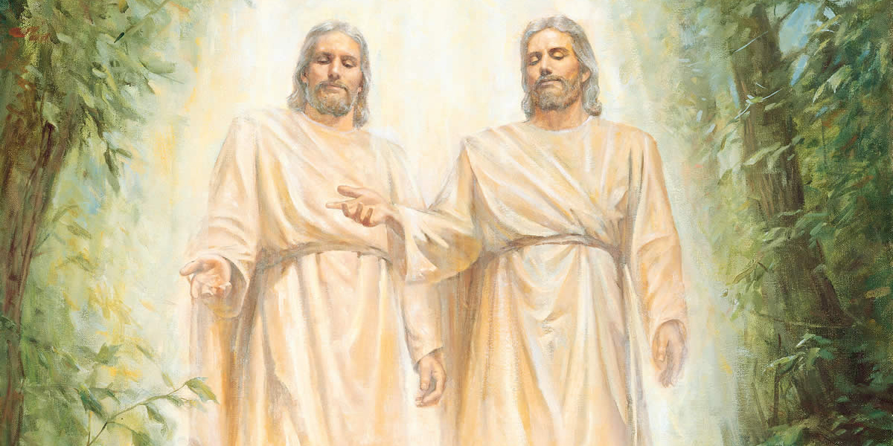

Mi filosofia de la Vida
Mis Creencias
Creencia Principal: La Trinidad

La Trinidad me ayuda a identificarme en el Plan de
Salvación de mi Padre Celestial. Me da el conocimiento que soy un Hijo de un Dios Supremo que es mi Padre Celestial, de un Rey que es
mi Hermano Mayor y a un Espíritu Santo guía y consolador. Me inspira a esforzarme, a tener un fuerte testimonio
espiritual y temporal, y a ser mejor cada día. Sé que un día estuve en la Vida Preterrenal donde se
me escogió para venir a esta tierra, a apoyar el plan de Salvación y a preparar esta tierra para recibir a un
miembro de la Trinidad, Jesucristo mismo.
Jesucristo
Yo se que Jesucristo es mi Salvador y Redentor.
El ha expiado mis pecados y es mi hermano mayor. Me ha bendecido siempre
y se que lo seguira haciendo mientras me esfuerze y sea obediente
La Autosuficiencia
Creo firmemente en que la Educación provee un mejor futuro a una
persona, si es que la aplica a su vida y se esfuerza para lograr más
metas y con ello encontrar un mejor empleo de acuerdo a sus
conocimientos. Es el esfuerzo constante la clave de esta, tengo
ánimo para aspirar a cosas que sean necesarias e importantes en mi
vida que puedan llevarme al éxito temporal y espiritual.
Mi Familia
En la Preexistencia escogí una familia para vivir en esta tierra de
probación. Sé que sin ella y sin su apoyo estaría solo, no contaría7
con el amor, bondad de las maravillosas personas que en ella se
encuentran, El algo fundamental tanto para el Plan de Salvación
de mi Padre Celestial como para mí, me motiva ya que sé que ellos
jamás me abandonaran por ninguna circunstancia, ni por esta vida
ni en la eternidad.
La Felicidad
Vine a esta tierra a experimentar cantidad de sentimientos, entre
ellos la Felicidad. Sé que habrá m omentos duros en los que me
desanimare, sin embargo sé que si mantengo un sentimiento de
ánimo, lograre salir de ellos, alcanzando felicidad. Si me esfuerzo
en mi vida, mis metas, lograre felicidad, si me esfuerzo en ser
mejor, en ser diferente cada día, tendré experiencias de gozo.
Mi Espiritualidad y mi Fe
Mi fe y testimonio me ayudan a ubicarme donde estoy y
adonde dirigirme. A confiar en mi Padre Celestial y Jesucristo
quienes me otorgan la guía de un maravilloso espíritu que me
testifica la verdad. Me llena de gozo haber conocido el
Evangelio Restaurado de Jesucristo que me ayuda a sentirme
cada vez más cerca de él.
Mi espiritualidad me ha llevado a obtener una comunicación
constante con mi Creador y debido a ello en mí he cosechado
Fe. Fe que me a ayuda a saber a dónde dirigirme, Fe para
confiar en Mi Creador y en mi Salvador, quienes me otorgan
la guía de un maravilloso Espíritu el cual me da guía y consuelo
y ayuda a que mi Espiritualidad crezca, para sentirme cada vez
más Cerca de Dios, y siempre hacer lo correcto.
Mi Educacion
Sin educación en mi vida, no tendría conocimientos los cuales me
hayan dirigido a donde hoy estoy. No tendría oportunidades que
me llevasen más cerca del éxito. Hoy pongo en práctica los
conocimientos que aprendo para desarrollar mejores habilidades,
las cuales las pueda aplicar en un mundo laboral y así estar más
cerca de mi Autosuficiencia.
Las Oportunidades
Sé de qué oportunidades hay pocas en este mundo y debo
aprovechar y dar lo máximo con cada una de ellas. Las
oportunidades me dan la fortuna de avanzar, desarrollar
habilidades y demostrar lo mejor de mí. Tanto en estudios y
laborales. También mi Padre Celestial me da muchas
oportunidades para avanzar siempre en rectitud en este mundo de
Probación y debo estar agradecido por cada una de ellas.
Mis Mentores
La Iglesia de Jesucristo de los Santos de los Ultimos Dias
Se convirtió mi mentor desde que
nací. Aprendí acerca de mi Preexistencia, La Trinidad,
El Gran Plan de Felicidad, Jesucristo y su Amor Puro. De las
bendiciones eternas que recibo al hacer convenios con mi Padre
Celestial y Jesucristo y al obedecerlos. Ahora sé quién soy y
lo que debo hacer. En este mentor incluyo Lideres, Profetas,
Apóstoles y Escrituras, y a mi Madre quien me inculcó y
enseño más acerca de esta verdad. Debido a todo esto,
hoy tengo grandes conocimientos que me ayudan a moldearme y a ser
mejor ciudadano, y me ayudaran de eternidad en eternidad. Sé que aquí puedo
encontrar respuestas a dudas y problemas temporales,espirituales; guía y consuelo.
Mis Maestros y Educadores
Son personas que me educaron en distintas áreas de conocimientos;
me instruyeron para ser una mejor persona en la vida, alcanzar
mejores resultados y cada vez el éxito y la Autosuficiencia.
Bernardita Hernández: Fue mi primera maestra en mi vida, me
enseño los primeros conocimientos educativos.
Equipo CAM-Lifting Generations: Me enseñaron el Idioma
Ingles y hablarlo fluidamente, también el área de Computación, la
cual me ha ayudado bastante a mejorar mis habilidades
tecnológicas. Gracias a ello estoy a un peldaño de alcanzar mi
Autosuficiencia.
Internet
A pesar de que no todo es fidedigno, responde
rápidamente a cosas que busco y deseo saber, realizar
rápidamente trabajos mediante los conocimientos
que ella se encuentran.
Libros
Considero que es uno de los mentores más importantes que he tenido
que en ella he encontrado información importante, he aprendido y he recibido instrucción
para mis dudas.
Mi Familia
Mi Familia: Me han ayudado a encontrar soluciones a mis
problemas y me han enseñado el orden y ser agradecido.
Sé que jamás me abandonaran.
Mis fortalezas y debilidades
(Segun el espejo social)
Fortalezas
Amabilidad
Responsabilidad
Paciencia
Debilidades
Pereza
Impotencia
¿Que deberia mejorar?
Relacionarme con mas personas
Evitar la Ociosidad
Ayudar mas en el aprendizaje de los demas
Segun el sistema DISC
I – 30 – Soy Influenciador o Interactivo.
S – 29 – Soy Estable y que Apoya.
C – 21 – Concienzudo, Complaciente, Competente.
D – 20 – Dominante o Director.
Mis Valores
Valores mas importantes
Disciplina
Familia
Dios
Educacion
Salud
Felicidad
Valores en Accion
Soy responsable
Hago mis deberes
Cumplo en tiempo y forma br Atiendo mis responsabilidades primero
Soy Feliz
Tengo felicidad
Veo el lado positivo de las cosas
Mantengo elevado mi animo
Tengo fe
Creo en Dios
Confio en Dios
Dios esta conmigo
¿Por que estaria dispuesto a morir en un momento de crisis?
Por salvar a una persona que está en riesgo o peligro de muerte,
sea quien sea, ya que sé que al ayudar solo servimos. Aún más
estará dispuesto por mi familia, ya que existe ese sentimiento de
que queremos que todo esté bien, controlado.
¿Cuando he sido feliz?
- Al ayudar y servir otras personas.
- Al ver una sonrisa o agradecimiento en una persona a la que
he ayudado.
- Estar con mi familia.
- Mi vida dentro de la Iglesia: Bautismo, Confirmación, Mi
ordenación al Sacerdocio.
- El estar con mis amigos
- Lograr mejorar en mis habilidades de computación, e Ingles
Mis Metas
Valor: Dios.
¿Por qué? – Es lo principal en mi vida.
Razón – Le debo mi vida, mi obediencia y mi fe.
Propósito – Ser mejor persona y ser ejemplo de él.
Meta: Obtener más fe, conocimiento y ser cada vez como él
es.
¿Qué debo hacer?
Buscar su guía, desarrollar fe.
Valor: Familia.
¿Por qué? – Es mi apoyo incondicional, mi sangre y parte de
mi vida.
Razón – Me criaron, me apoyaron, están conmigo siempre.
Propósito – Estar con ella siempre, no abandonarles.
Meta: Sellarnos en un Santo Templo.
¿Qué debo hacer?
Prepararme, alentar a mi familia, tener fe y paciencia.
Estableciendo Metas
Metas A
- Sellarme en un Santo Templo con mi familia.
- Hablar fluidamente el idioma Ingles.
- Ser un Médico Profesional.
- Apoyar y ayudar a personas necesitadas.
- Formar una familia.
- Ser un buen líder eclesiástico.
Metas Z
- Aprender un idioma aparte de Español e Inglés.
- Aventurarme y Conocer gran parte de mi País.
- Conocer otros países.
- Viajar en un Crucero, Avión y Helicóptero.
El recordar claves
Ser un Psicólogo Profesional
Ubicación Actual: Estudiante
Plazo: 2022 – 2034
Obstáculos: Tiempo
¿Cómo eliminarlos? Esfuerzo
Beneficios: Autosuficiencia, éxito personal
¿Quién es ayuda? Maestros, Médicos, Libros
Hablar Inglés
Ubicación Actual: Estudiante
Plazo: 2019 - 2020
Obstáculos: Tiempo
¿Cómo eliminarlos? Esfuerzo
Beneficios: Autosuficiencia, éxito personal
¿Quién es ayuda? Maestros, Diccionarios
Formar una familia
Ubicación Actual: Joven 17 años
Plazo: 2020- 2023
Obstáculos: Edad
Beneficios: Pareja eterna
¿Quién es ayuda? Dios, Líderes, Familia
Vitalizadores
Personas por las cuales estoy agradecido
Dios, Jesucristo, Mis Padres, Mis Maestros, Mis Abuelas, cada uno de ellos han formado parte
de mi instruccion, de mi formacion, de la persona que hoy soy y un dia sere. Se que gracias a ellos
soy y sere mejor.
Experiencias de la vida que han sido momentos de cambio
- Bautizarme y me confirmaran miembro de la Iglesia de
Jesucristo de los Santos de los Últimos Días, ya que fue el
inicio de una nueva vida, de ser diferente, de progresar
espiritual y temporalmente.
- Aprender Inglés ya que puedo manejar dos idiomas, y esto
me da la oportunidad de cambiar y enfocarme en una vida
mejor y lo que hare con ella.
- Mi Bachillerato influyo mucho en mi cambio ya que fue el
final de una etapa e inicio de otra, afrontar un nuevo mundo,
un mundo donde si no me preparo bien, fracasare como
persona al no prestar atención a las diferentes y pocas
oportunidades que se me presentaran.
- El prepararme para servir una Misión de la Iglesia de
Jesucristo me ha hecho recapacitar en muchas cosas,
cambiar ya que representare a Jesucristo sea como sea,
donde sea y de la manera que sea. Seré un agente y debo
comportarme como tal. Al salir mi hermana a la misión me
animo a seguir su ejemplo y a embarcarme en prepararme
para servir una también.
- El tener Epilepsia me hizo cambiar mi modo de ver las cosas
y como sacarle provecho aun con las dificultades.
Elijo perdonar
¿Hay alguien a quien perdonar? No
¿Es usted mismo? No
¿Necesita perdonar a un amigo o vecino? No
Identifique algo o alguien que requiere su perdón: ------------
Entonando mi propia cancion
Mi Epitafio
Como estrella fugaz eclipsando
Todo a su paso, a todas las demás
Ilumine con mi esfuerzo.
Un día mi nave ha de tornar,
Mientras tomo un ligero
Descanso en el más allá.
¿Que diria de mi un ser querido?
Se esforzó por ser la persona que fue, por ser diferente y
ser ejemplo a los demás. A pesar de ser una persona
imperfecta se esforzó por ayudar a las personas a
mejorar sus vidas. Amo el evangelio y se esforzó por
obedecerlo a pesar de todas las dificultades.